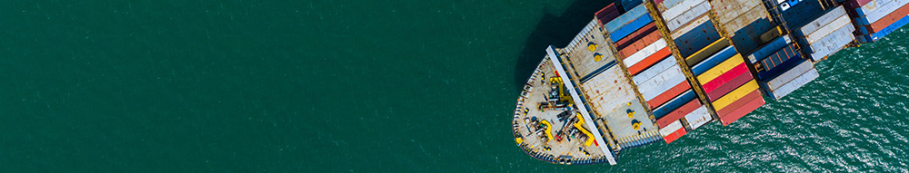
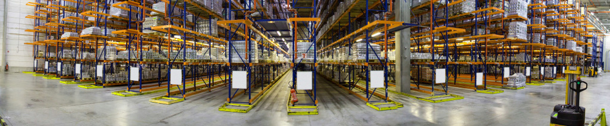

DAUJA fue concebida en el año 1997 como un negocio familiar de transporte que en el tiempo se transformó en una compañía enfocada en el mercado logístico y aduanero, bajo los conceptos de calidad, eficiencia y tecnología aplicadas al servicio de nuestros clientes. Tenemos la experiencia necesaria para prestar un servicio de primer nivel. Poseemos una flota de unidades propias equipadas con los máximos estándares de seguridad, y contamos con el personal especializado, capacitado para la conducción de las mismas. También disponemos de dos plantas estratégicamente ubicadas en la Zona Sur del Gran Buenos Aires, una de ellas en Avellaneda y la otra en la localidad de Lanus. Por otra parte tenemos talleres propios, lo que nos permite adaptar nuestros camiones a necesidad del cliente, detalle que nos diferencia de nuestros competidores. Nuestro desafío es tener una empresa ágil y rápida, capaz de adaptarse de manera inmediata a las necesidades del cliente y con atención personalizada de sus propios dueños.
Somos una empresa con una vasta trayectoria en el traslado de cargas por vía terrestre, dedicados enteramente al transporte de todo tipo de cargas, tanto generales como también cargas sueltas IMO y movimiento de contenedores. Actualmente, poseemos una flota de equipos propios en excelentes condiciones, así como también otros equipos contratados que acompañan nuestro crecimiento diario. Basándose en nuestra actitud intuitiva pero esencial, y disponiendo constantemente del fruto de nuestro trabajo. Incorporamos día a día nuevos y modernos equipos, desarrollando simultáneamente la infraestructura de nuestra empresa. Ofrecemos una completa gama de servicios que comprenden desde el asesoramiento en todos los aspectos técnicos, operativos y jurídicos que conforman el universo normativo aduanero hasta el desarrollo de actividades conexas conforme a las necesidades cambiantes de las operaciones de compra-venta internacional. En nuestra flota contamos con camiones Renault Midlum, Fiat Iveco Eurocargo, Mercedes Benz, Volkswagen 17-220, Ford Cargo y 4000, como también contamos con portacontenedores, semirremolques, furgones, chasis con cabinas y acoplados con baranda. Y de ser necesario contamos con máquinas para realizar desconsolidado de mercadería y galpones para su almacenaje. Todos nuestros equipos se encuentran con sus respectivas habilitaciones para realizar tanto cargas generales como cargas peligrosas; acompañadas de nuestro personal quien cumple con las condiciones legales de trabajo. Nuestras unidades cuentan con excelentes servicios de seguridad, entre los que se incluye el control satelital a través de GPS y VLU, no solo en los camiones sino también en nuestros semis y arañas, sistema de corte de combustible, notificación por apertura no programada de puertas, alarmas de desenganches, traba de plato, etc.
